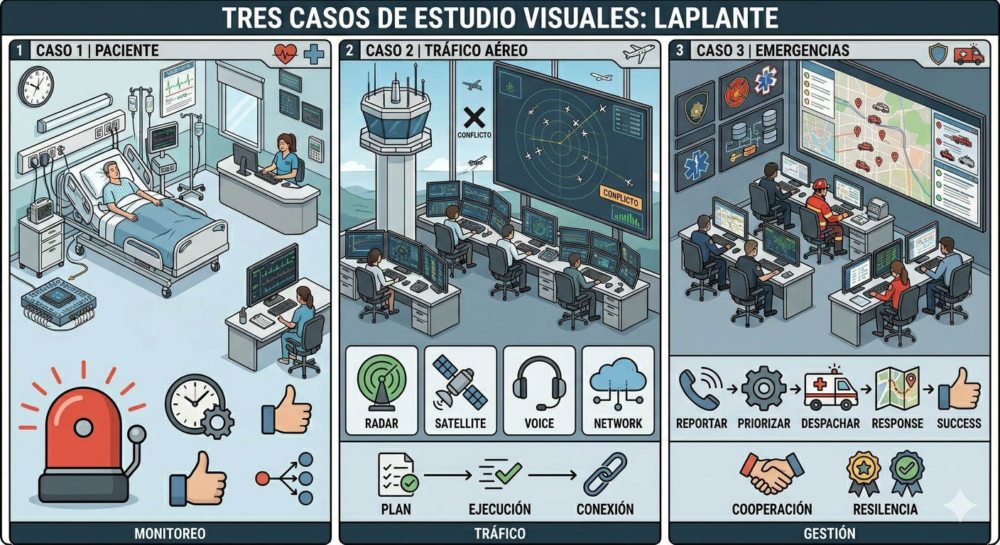
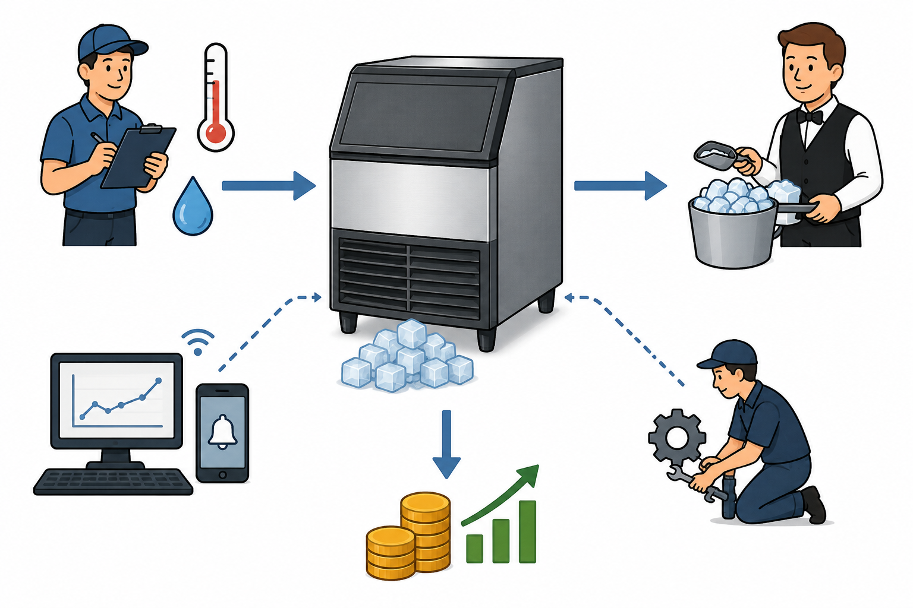
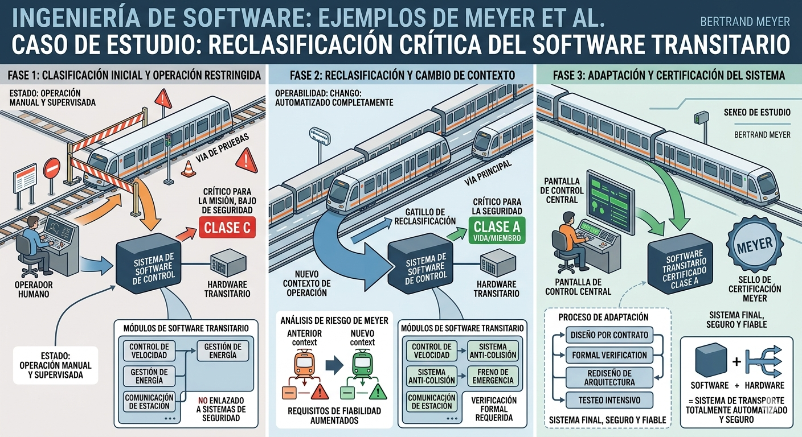

Las definiciones formales y las plantillas adquieren su sentido pleno cuando se aplican a
casos concretos. Esta sección recorre los casos que la literatura usa para enseñar a redactar
FR, agrupados por autor y por sistema de estudio. Conservamos, donde
es posible, la formulación original con la que cada autor presenta su requerimiento, porque ahí está la
lección: no son enunciados inventados para ilustrar una idea, sino proyectos reales o
de referencia que cada autor ha empleado para enseñar a redactar.
━━━━━━━━━━━━━━━━━━━ ◦ ❖ ◦ ━━━━━━━━━━━━━━━━━
2. El ejemplo de la bomba de insulina aplicado a la plantilla de siete campos
2Desarrollo del ejemploEl ejemplo de la bomba de insulina aplicado a la plantilla de siete campos —
Sommerville (2011) vuelve sobre la bomba de insulina para mostrar cómo se ve un
mismo FR en dos registros. En lenguaje natural, formula: «Si se requiere, cada 10 minutos
el sistema medirá el azúcar en la sangre y administrará insulina», e incluye entre
paréntesis la razón de esa frecuencia (Sommerville, 2011, p. 96)32. En la plantilla
estructurada de siete campos, el mismo comportamiento se desglosa en Función (calcular la
dosis cuando el azúcar está entre 3 y 7 unidades), Entradas (lectura actual y dos
previas), Salida (CompDose), Acción (calcular en función de la pendiente),
Precondición (depósito con al menos una dosis máxima), Postcondición (lecturas
previas actualizadas) y Efectos colaterales (ninguno) (Sommerville, 2011, §4.3.2,
p. 98). El cambio de registro no es burocracia: cierra la ambigüedad del lenguaje
natural y entrega al equipo de pruebas una base verificable.
Procedimiento para seguir el ejemplo
- Lee el FR en lenguaje natural sobre la bomba de insulina y observa la razón explícita entre paréntesis.
- Compara esa formulación con la versión desglosada en la plantilla de siete campos.
- Identifica qué campo responde a cuál elemento del lenguaje natural (función, entradas, salidas, etc.).
- Extrae la lección: el cambio de registro cierra la ambigüedad y entrega una base verificable.
(Figura: Bomba de insulina.)
1Problema
- El sistema de control debía administrar dosis correctas de insulina a partir de mediciones periódicas del nivel de azúcar en sangre.
- Era necesario definir con claridad el comportamiento del sistema para evitar errores médicos.
- Existía el riesgo de ambigüedades en la implementación que comprometieran la salud del paciente.
2Aplicación del concepto
- Sommerville aplica lineamientos de redacción clara y la plantilla estructurada de siete campos.
- El FR principal fija la frecuencia de medición y la condición para administrar la insulina, con su justificación explícita.
- El mismo comportamiento se desglosa luego en los siete campos (función, entradas, salidas, acción, precondiciones, postcondiciones y efectos colaterales).
- La estructura define con precisión el comportamiento del sistema y las condiciones que deben cumplirse antes y después de cada operación.
3Resultado
- Los FR estructurados reducen la ambigüedad y facilitan la comprensión del comportamiento esperado del sistema.
- Permiten establecer condiciones verificables para el equipo de pruebas y mejoran la seguridad en sistemas críticos como una bomba de insulina.
- Las plantillas detalladas ayudan a asegurar que el sistema funcione correctamente bajo condiciones específicas y disminuyen el riesgo de errores.
━━━━━━━━━━━━━━━━━━━ ◦ ❖ ◦ ━━━━━━━━━━━━━━━━━
3. Los ejemplos de Laplante: tres casos de estudio recurrentes
3Desarrollo del ejemploLos ejemplos de Laplante — tres casos de estudio recurrentes
Laplante (2017) ancla casi cada concepto del libro en tres casos de estudio: un sistema de
manejo de equipajes (baggage handling system), un punto de venta para una tienda de mascotas
(pet store POS system) y un hogar inteligente (smart home system).
Para el sistema de manejo de equipaje, el autor ofrece una muestra que ilustra el uso del
verbo «shall» y de la numeración jerárquica: «El sistema deberá manejar hasta 20 equipajes
por minuto», y, como ejemplo de comportamiento prohibido, «cuando el sistema esté en modo inactivo, la banda transportadora no deberá moverse» (Laplante, 2017, Cap. 1, p. 7)33
.
Para el sistema de punto de venta, un FR ilustrativo es: «Cuando el operador presione
el botón "total", la venta actual entrará en estado cerrado» (Laplante, 2017, Cap. 1, p. 7)34
.
Nótese cómo el enunciado describe simultáneamente una entrada (la pulsación del botón), una
transición de estado y la respuesta esperada del sistema, en una sola oración.
Laplante (2017) también utiliza estos casos para mostrar la asociación entre requerimientos
no funcionales y funcionales. Un NFR de seguridad típico, formulado como «sólo los usuarios
autorizados deberían poder acceder a la funcionalidad X del sistema», se traduce en uno o más
FRs concretos que implementen la autenticación y el control de acceso (Laplante, 2017, p. 10)35
.
Procedimiento para seguir el ejemplo
- Identifica los tres casos de estudio que Laplante repite a lo largo del libro (equipaje, punto de venta, hogar inteligente).
- Observa el uso del verbo «shall» y la numeración jerárquica en el caso del equipaje.
- Compara el ejemplo de comportamiento permitido con el de comportamiento prohibido.
- Localiza la traducción de un NFR de seguridad a uno o varios FR de autenticación y control de acceso.
- Extrae la lección: «shall» formaliza la obligación y los NFR de seguridad generan FR derivados.

(Figura: Casos de estudio.)
1Problema
- Los sistemas de Laplante (equipaje, punto de venta, hogar inteligente) necesitaban definir con claridad cómo debía reaccionar el software ante entradas y condiciones específicas.
- Era necesario evitar ambigüedades en la especificación de comportamientos y asegurar que el sistema ejecutara solo las acciones permitidas.
- Había que relacionar correctamente los FR con restricciones de seguridad y control de acceso.
2Aplicación del concepto
- Laplante redacta sus FR con el verbo «shall» para expresar obligaciones claras y verificables.
- En el sistema de equipajes muestra tanto un comportamiento permitido como uno prohibido (la banda transportadora no debe moverse en modo inactivo).
- En el punto de venta, una entrada específica (presionar «total») produce una transición de estado, descrita en una sola oración.
- Muestra también cómo un NFR de seguridad se traduce en FR concretos de autenticación y control de acceso.
3Resultado
- Los FR bien redactados definen con precisión acciones, restricciones y respuestas esperadas del sistema.
- El uso de estructuras claras y verbos obligatorios facilita la verificación y reduce errores de interpretación.
- Los NFR pueden generar FR derivados que implementen mecanismos específicos de seguridad y control dentro del sistema.
━━━━━━━━━━━━━━━━━━━ ◦ ❖ ◦ ━━━━━━━━━━━━━━━━━
4. Los ejemplos de Robertson & Robertson: el caso IceBreaker
4Desarrollo del ejemploLos ejemplos de Robertson & Robertson — el caso IceBreaker
Robertson y Robertson (2012) construyen toda la metodología Volere alrededor del proyecto
IceBreaker, un sistema de planeación del deshielo de carreteras. El ejemplo introductorio, que
aparece muy temprano en el libro, ya muestra la forma canónica «The product shall...» en
acción: «The product shall produce a schedule of all roads upon which ice is predicted to form
within the given time parameter» (Robertson & Robertson, 2012, Cap. 1, p. 10)36. La definición
canónica del Capítulo 10 se ilustra con un ejemplo análogo: «The product shall predict which
road sections will freeze within the selected time parameters» (Robertson & Robertson, 2012,
Cap. 10, p. 223).
El verdadero valor pedagógico aparece, sin embargo, en la descomposición de un escenario
de caso de uso. Partiendo del paso «El ingeniero proporciona una fecha de programación y un
identificador de distrito», los autores derivan cinco FRs atómicos: (i) «The product shall accept
a scheduling date»; (ii) «The product shall warn if the scheduling date is neither today nor
the next day»; (iii) «The product shall accept a valid district identifier»; (iv) «The product
shall verify that the district is within the de-icing responsibility of the area covered by this
installation»; (v) «The product shall verify that the district is the one wanted by the engineer»
(Robertson & Robertson, 2012, Cap. 10, p. 227)37. Cinco oraciones, cinco verbos activos, cinco
cosas verificables. Es la disciplina Volere en acción.
El ejemplo más recordado del libro es el del par Description + Rationale aplicado al mismo
proyecto: Description: «The product shall record roads that have been treated»; Rationale: «To
be able to schedule untreated roads and highlight potential danger» (Robertson & Robertson,
2012, pp. 229–230). El rationale, en este caso, eleva un FR aparentemente trivial a la categoría
de requerimiento crítico: de él dependen vidas humanas en carreteras heladas.
Procedimiento para seguir el ejemplo
- Identifica el proyecto IceBreaker (planeación del deshielo de carreteras) y la forma canónica «The product shall...».
- Observa la descomposición de un escenario de caso de uso en cinco FR atómicos: una oración por requerimiento, un verbo activo por oración.
- Analiza el par Description + Rationale aplicado a un mismo requerimiento.
- Extrae la lección: el rationale eleva un FR trivial a requerimiento crítico al hacer explícita la razón de negocio.

(Figura: IceBreaker.)
1Problema
- El sistema IceBreaker debía planificar el deshielo de carreteras y predecir qué vías podrían congelarse dentro de un intervalo de tiempo.
- Era necesario definir con precisión las funciones del sistema para evitar errores en la programación del tratamiento de carreteras.
- Una mala especificación podía afectar la seguridad vial y poner en riesgo vidas humanas.
2Aplicación del concepto
- Robertson y Robertson aplican la metodología Volere y la forma canónica «The product shall...».
- Muestran cómo un escenario general se descompone en múltiples FR atómicos y verificables.
- A partir de una acción simple del ingeniero (ingresar fecha e identificador de distrito) se derivan FR específicos de validación, verificación y confirmación.
- Introducen el par Description + Rationale, que no solo especifica qué hace el sistema sino por qué importa para el negocio o la seguridad.
3Resultado
- La descomposición de escenarios en FR específicos produce especificaciones claras, verificables y fáciles de implementar.
- Incluir el rationale ayuda a comprender la importancia real de cada requerimiento y facilita la toma de decisiones durante el desarrollo.
- El caso IceBreaker muestra cómo una correcta especificación funcional puede contribuir directamente a la seguridad y prevención de riesgos en sistemas críticos.
━━━━━━━━━━━━━━━━━━━ ◦ ❖ ◦ ━━━━━━━━━━━━━━━━━
5. Los ejemplos del Volere Knowledge Model
5Desarrollo del ejemploLos ejemplos del Volere Knowledge Model —
Cuando Robertson y Robertson (2012) formalizan la clase Functional Requirement en el
Apéndice D del libro, ilustran el concepto con cuatro ejemplos cortos pero altamente representativos: «calcular la tarifa», «analizar la composición química», «registrar el cambio de nombre», «encontrar la nueva ruta» (Robertson & Robertson, 2012, Apéndice D, p. 500). La elección no
es casual: cada uno de los cuatro verbos —calcular, analizar, registrar, encontrar— corresponde a una de las operaciones CRUD (create, read, update, delete) que los autores consideran
consustanciales a todo FR
Procedimiento para seguir el ejemplo
- Localiza los cuatro ejemplos del Apéndice D: «calcular la tarifa», «analizar la composición química», «registrar el cambio de nombre», «encontrar la nueva ruta».
- Identifica el verbo principal de cada uno y asígnalo a una operación CRUD.
- Reconoce que los cuatro ejemplos provienen de dominios muy distintos, pero comparten estructura verbal.
- Extrae la lección: todo FR puede reducirse, en el fondo, a una operación CRUD sobre un objeto del dominio.
(Figura: Volere Knowledge Model.)
1Problema
- Los sistemas de software necesitan definir con claridad las acciones que deben ejecutar sobre la información y los procesos internos.
- Hay que identificar y especificar de forma precisa las operaciones fundamentales que el sistema debe realizar.
- El objetivo es garantizar que los datos puedan ser procesados, consultados y actualizados correctamente.
2Aplicación del concepto
- Robertson y Robertson ilustran el concepto de FR con ejemplos breves que representan operaciones esenciales dentro de un sistema.
- «Calcular la tarifa», «analizar la composición química», «registrar el cambio de nombre» y «encontrar la nueva ruta» muestran cómo los FR se expresan con verbos de acción.
- Cada verbo corresponde a una operación básica de manejo de información y refleja una función fundamental de todo sistema.
3Resultado
- Los FR deben centrarse en acciones específicas y verificables realizadas por el sistema.
- El uso de verbos claros facilita la identificación del comportamiento esperado y ayuda a estructurar las funciones principales del software.
- Muchas funcionalidades pueden relacionarse con operaciones básicas de manejo de datos y procesos, lo que permite organizar mejor los FR.
━━━━━━━━━━━━━━━━━━━ ◦ ❖ ◦ ━━━━━━━━━━━━━━━━━
6. Los ejemplos de Wiegers & Beatty: el sistema de aerolínea
6Desarrollo del ejemploLos ejemplos de Wiegers & Beatty — el sistema de aerolínea
Wiegers y Beatty (2013) acompañan su definición del FR como «descripción de un comportamiento que un sistema exhibirá bajo condiciones específicas» con dos ejemplos icónicos del
sistema de reservas de una aerolínea, ambos redactados con la fórmula «shall»: «El Pasajero
deberá poder imprimir tarjetas de embarque para todos los segmentos de vuelo en los que ha
hecho check-in», y «Si el perfil del Pasajero no indica preferencia de asiento, el sistema de
reservas deberá asignar un asiento» (Wiegers & Beatty, 2013, p. 9).
El primero ilustra la plantilla Alexander-Stevens —«El [actor] deberá poder [hacer algo] [a
un objeto] [con condiciones]»—; el segundo ilustra la sintaxis EARS para FRs condicionales
—«Si [precondición], el sistema deberá [respuesta]»— (Wiegers & Beatty, 2013, p. 208).
El otro caso de estudio recurrente del libro es el Chemical Tracking System (CTS), del que los
autores extraen un ejemplo aplicado a la plantilla Alexander-Stevens: «El Químico deberá poder
reordenar cualquier producto químico que haya pedido en el pasado mediante la recuperación y
edición de los detalles del pedido» (Wiegers & Beatty, 2013, p. 208). Adicionalmente, cuando el
FR cae naturalmente del diálogo entre actor y sistema en un caso de uso, los autores muestran un
ejemplo prototípico: «El sistema deberá asignar un número de secuencia único a cada solicitud»
(Wiegers & Beatty, 2013, Cap. 8, p. 162)38
.
Para el SRS de muestra del CTS en el Apéndice C, Wiegers y Beatty (2013) emplean
identificadores jerárquicos textuales como Request.Find.Vendor o Request.Find.HazRefs,
en lugar de números secuenciales como FR-26 (Wiegers & Beatty, 2013, p. 188)39. La intención
es que el identificador hable por sí mismo: leer la etiqueta basta para entender de qué FR se
trata, sin tener que cruzarla contra una tabla
Procedimiento para seguir el ejemplo
- Lee los dos ejemplos del sistema de reservas de la aerolínea, ambos con la fórmula «shall».
- Relaciona el primero con la plantilla Alexander-Stevens y el segundo con la sintaxis EARS para FR condicionales.
- Compara con el ejemplo del Chemical Tracking System (CTS) y el del caso de uso con diálogo actor–sistema.
- Observa la convención de identificadores jerárquicos textuales del CTS (Request.Find.Vendor) frente a la numeración simple (FR-26).
- Extrae la lección: la plantilla y la sintaxis elegidas determinan la legibilidad, y el identificador debe bastar para entenderse solo.
(Figura: Wiegers & Beatty)
1Problema
- Los sistemas de reservas y de gestión química necesitaban definir con claridad cómo debía comportarse el software bajo condiciones y acciones de los usuarios.
- Era necesario redactar FR que describieran con precisión las respuestas esperadas del sistema.
- Había que evitar ambigüedades y facilitar la comprensión de desarrolladores, analistas y equipos de prueba.
2Aplicación del concepto
- Wiegers y Beatty aplican plantillas estructuradas y sintaxis estandarizadas para los FR.
- En el sistema de reservas usan «shall» para describir capacidades del pasajero y respuestas automáticas bajo ciertas condiciones.
- Emplean la plantilla Alexander-Stevens y la sintaxis EARS para FR condicionales, claros y verificables.
- En el Chemical Tracking System muestran al actor recuperando, editando o registrando información.
- Utilizan identificadores jerárquicos textuales para que cada FR sea reconocible por su nombre.
3Resultado
- Las plantillas estructuradas y las convenciones de redacción producen FR más claros, comprensibles y verificables.
- El uso de condiciones explícitas mejora la definición del comportamiento esperado frente a distintas situaciones.
- Los identificadores jerárquicos facilitan la organización y trazabilidad de los FR dentro de la documentación del sistema.
━━━━━━━━━━━━━━━━━━━ ◦ ❖ ◦ ━━━━━━━━━━━━━━━━━
7. El ejemplo aislado de Pressman: el sistema de depósito con sensores
7Desarrollo del ejemploEl ejemplo aislado de Pressman — el sistema de depósito con sensores
Pressman (2002) no abunda en ejemplos ilustrativos. De hecho, en todo el libro aparece
un único ejemplo concreto de cómo redactar un FR en lenguaje natural, situado en el capítulo
dedicado a métodos formales: «El sistema debe de mantener el nivel horario del depósito a partir
de los sensores de profundidad situados en el depósito. Estos valores deben de ser almacenados
para los últimos seis meses» (Pressman, 2002, Cap. 25, p. 437)40
.
El ejemplo es valioso por su economía: en dos oraciones, el autor identifica el sujeto («el
sistema»), un verbo modal de obligación («debe de»), las acciones específicas (mantener, almacenar), las condiciones cuantificables (horario, seis meses) y el origen de los datos (sensores de
profundidad). Es prácticamente la plantilla Alexander-Stevens implícita, redactada en español
castizo.
En cuanto a la identificación, Pressman (2002) propone un esquema mínimo: el código F
seguido de un número, donde un requisito etiquetado como F09 indica que se trata de un
requisito funcional y que le ha sido asignado el número 9 dentro de los citados requisitos
(Pressman, 2002, §10.5.6, p. 175). La convención coincide con la recomendación de Wiegers y
Beatty (2013) de usar el prefijo FR seguido de un número de secuencia único, como FR-26 o
UC-9 (Wiegers & Beatty, 2013, p. 187)41
.
Procedimiento para seguir el ejemplo
- Lee el único ejemplo concreto de FR en lenguaje natural que Pressman ofrece (capítulo de métodos formales).
- Identifica sus elementos: sujeto, verbo modal de obligación, acciones, condiciones cuantificables y origen de los datos.
- Compara la redacción con la plantilla Alexander-Stevens implícita que Pressman aplica en español peninsular.
- Observa el esquema de identificación mínimo (F09) y su coincidencia con la convención FR-26 de Wiegers y Beatty.
- Extrae la lección: con sujeto, verbo, acción y condición, basta para redactar un FR verificable.
(Figura: Cajero ATM con sensores.)
1Problema
- El sistema de control del depósito debía mantener registros periódicos a partir de sensores de profundidad y almacenarlos durante un periodo determinado.
- Era necesario definir con claridad las funciones obligatorias del sistema.
- Faltaba una manera simple de identificar y organizar los FR dentro de la documentación.
2Aplicación del concepto
- Pressman muestra el concepto de FR con un ejemplo en lenguaje natural: el sistema debe mantener registros horarios del depósito y almacenar la información de los sensores durante seis meses.
- El FR incluye sujeto, acciones concretas, restricciones temporales y origen de los datos.
- Propone un esquema de identificación sencillo con la letra «F» seguida de un número para clasificar y organizar los FR.
3Resultado
- Un FR puede describirse de forma breve y suficientemente precisa si contiene acciones claras, condiciones cuantificables y responsabilidades del sistema.
- Los sistemas de identificación simples mejoran la organización y trazabilidad de los FR dentro de la documentación.
- Incluso ejemplos cortos pueden servir como modelos efectivos para redactar FR comprensibles y verificables.
━━━━━━━━━━━━━━━━━━━ ◦ ❖ ◦ ━━━━━━━━━━━━━━━━━
8. Los ejemplos de Celi-Párraga: el sistema de pedidos de alimentos
8Desarrollo del ejemploLos ejemplos de Celi-Párraga — el sistema de pedidos de alimentos
Celi-Párraga et al. (2023) introducen un ejemplo gráfico que sirve para ilustrar simultáneamente los conceptos de actor, interacción y FR. El sistema de pedidos de alimentos se modela
con cuatro actores —Cliente, Vendedor, Administrador, Cocinero— y siete interacciones funcionales identificadas: pedir los alimentos, entregar dinero, realizar los alimentos, entregar los
alimentos, calentar los alimentos, pago de los productos, y la relación con proveedores y ganancias (Celi-Párraga et al., 2023, §3.3, p. 40). Cada una de esas interacciones constituye un
requerimiento funcional candidato del sistema, y el diagrama deja ver cómo los FRs no son
simples enunciados aislados, sino nodos en una red de relaciones entre quienes usan el sistema
y los servicios que éste provee.
Procedimiento para seguir el ejemplo
- Identifica los cuatro actores del sistema de pedidos de alimentos (Cliente, Vendedor, Administrador, Cocinero).
- Localiza las siete interacciones funcionales del diagrama (pedir, entregar dinero, preparar, entregar, calentar, pagar, relación con proveedores).
- Relaciona cada interacción con el o los actores involucrados.
- Extrae la lección: los FR no son enunciados aislados, sino nodos en una red de relaciones entre actores y servicios.
(Figura: Pedidos de alimentos.)
1Problema
- El sistema de pedidos debía coordinar acciones e interacciones entre clientes, vendedores, administradores y cocineros.
- Era necesario identificar con claridad las funciones que el sistema debía ofrecer.
- Había que establecer cómo cada actor interactuaba con esas funciones para garantizar un flujo correcto de pedidos, pagos, preparación y entrega.
2Aplicación del concepto
- Celi-Párraga et al. muestran el concepto de FR con un modelo gráfico que relaciona actores e interacciones dentro del sistema.
- Cada interacción (pedir alimentos, entregar dinero, realizar pedidos, calentar alimentos, gestionar pagos) es un FR candidato.
- El diagrama permite visualizar cómo los actores usan los servicios del sistema y cómo los FR se conectan formando una red de relaciones.
3Resultado
- Los FR no deben verse únicamente como enunciados independientes, sino como funciones relacionadas con actores y procesos del sistema.
- El uso de diagramas facilita la identificación de funcionalidades y la comprensión de las interacciones entre usuarios y sistema.
- El modelo permite organizar con mayor claridad las responsabilidades y servicios que el software debe proporcionar.
━━━━━━━━━━━━━━━━━━━ ◦ ❖ ◦ ━━━━━━━━━━━━━━━━━
9. Los ejemplos de SWEBOK: capacidades elementales del software
9Desarrollo del ejemploLos ejemplos de SWEBOK — capacidades elementales del software
Bourque y Fairley (2014) ilustran su definición de FR con dos casos deliberadamente sencillos: «formatear un texto» y «modular una señal» (Bourque & Fairley, 2014, Software Requirements KA, §1.3, p. 1-3). La elección es intencional. Al elegir ejemplos de tan distinta naturaleza
—uno es una operación de software ofimático, el otro una operación de procesamiento de señales—, los autores subrayan que la categoría «requerimiento funcional» es transversal a todos
los dominios de aplicación. Lo que hace funcional a un requerimiento no es el dominio en el que
vive, sino el hecho de describir una función que el software debe ejecutar.
Procedimiento para seguir el ejemplo
- Lee los dos ejemplos deliberadamente sencillos que ofrece SWEBOK: «formatear un texto» y «modular una señal».
- Identifica el dominio de cada uno (ofimática y procesamiento de señales).
- Compara la diversidad de dominios con la similitud estructural: ambos describen una acción ejecutada por el software.
- Extrae la lección: la categoría «requerimiento funcional» es transversal a todos los dominios de aplicación.
(Figura: Software.)
1Problema
- Los sistemas de software, independientemente de su área de aplicación, necesitan definir con claridad las funciones que deben ejecutar.
- Los FR pueden existir en cualquier dominio, pero muchas veces se confunden con características específicas del área de aplicación.
- El reto es centrarse en la función que el sistema debe realizar, no en los rasgos del dominio.
2Aplicación del concepto
- Bourque y Fairley ilustran el concepto de FR con ejemplos simples de dominios diferentes («formatear un texto» y «modular una señal»).
- El FR se caracteriza por describir una acción o función que el software debe ejecutar, sin importar el dominio.
- La categoría se aplica por igual a sistemas ofimáticos, industriales, científicos o de procesamiento de señales.
3Resultado
- Los FR son independientes del dominio de aplicación y su característica principal es describir comportamientos o funciones del sistema.
- Cualquier sistema, sin importar su propósito, debe especificar con claridad las acciones que debe realizar.
- La consecuencia práctica: la noción de FR es transversal a todo tipo de software.
━━━━━━━━━━━━━━━━━━━ ◦ ❖ ◦ ━━━━━━━━━━━━━━━━━
10. Los ejemplos de Meyer et al.: la reclasificación crítica
10Desarrollo del ejemploLos ejemplos de Meyer et al. — la reclasificación crítica
Meyer et al. (2019) adoptan un enfoque distinto: en lugar de proponer sus propios ejemplos,
toman enunciados típicos de documentos industriales y los reclasifican bajo su taxonomía. El
ejemplo prototípico de la categoría Behavior —que ellos consideran la categoría matriz dentro de
la cual se inscribe lo «funcional»— es deliberadamente mínimo: «Mostrar la lista de elementos
disponibles» (Meyer et al., 2019, §4.1, p. 7). Es un comportamiento que especifica un efecto
observable —qué muestra el sistema— sin determinar el cómo, y por eso califica como propiedad
funcional.
Los ejemplos de timing y seguridad —«límites de tiempo» y «condiciones de seguridad»—
se citan, en cambio, como casos clásicos de comportamiento no funcional, esto es, propiedades
sobre cómo se logran los efectos del sistema (Meyer et al., 2019, §4.2, p. 9).
El ejercicio se vuelve más interesante cuando los autores aplican la taxonomía a un documento real (Bair, 2006). Un enunciado típicamente catalogado como funcional —«El sistema
deberá permitir el pedido de productos en línea por parte del cliente o del agente de ventas»—
se reclasifica simplemente como Behavior (Meyer et al., 2019, §6, p. 15)42. En contraste, un
enunciado típicamente catalogado como no funcional —«El sistema deberá estar completamente operativo al menos el x % del tiempo»— se reclasifica como Constraint (Meyer et al., 2019,
§6, p. 16)43. La lección es práctica: distinga siempre entre lo que el sistema hace (Behavior, FR)
y las restricciones sobre cómo lo hace o cuándo está disponible (Constraint, NFR).
Procedimiento para seguir el ejemplo
- Identifica la diferencia entre las categorías Behavior (lo que el sistema hace) y Constraint (cómo o cuándo lo hace).
- Lee el ejemplo mínimo de Behavior: «Mostrar la lista de elementos disponibles».
- Compara con los casos clásicos de Constraint: «límites de tiempo» y «condiciones de seguridad».
- Observa la reclasificación de un enunciado industrial real (Bair, 2006) en cada categoría.
- Extrae la lección: la frontera entre FR y NFR se traza por la pregunta «¿qué hace el sistema?» frente a «¿bajo qué condiciones lo hace?».

(Figura: reclasificación crítica.)
1Problema
- Los documentos de requisitos suelen mezclar FR y NFR, lo que genera confusión al clasificar y analizar el comportamiento esperado del sistema.
- El reto es distinguir con claridad entre las funciones que el sistema debe realizar y las restricciones de rendimiento, disponibilidad o seguridad.
2Aplicación del concepto
- Meyer et al. aplican una taxonomía basada en Behavior y Constraint.
- Un FR describe un comportamiento observable del sistema (p. ej., «mostrar una lista de elementos disponibles»), sin especificar el cómo.
- Las propiedades de tiempo de respuesta, disponibilidad o seguridad se clasifican como restricciones (NFR).
- Los autores analizan documentos industriales y reclasifican requerimientos tradicionales para diferenciar comportamiento de restricciones.
3Resultado
- Los FR deben enfocarse en describir qué hace el sistema; los NFR establecen condiciones o restricciones sobre cómo opera.
- Una clasificación correcta facilita el análisis y la organización de los requisitos en un proyecto de software.
- La taxonomía propuesta ayuda a evitar confusiones entre funcionalidades y características de calidad, rendimiento o disponibilidad.